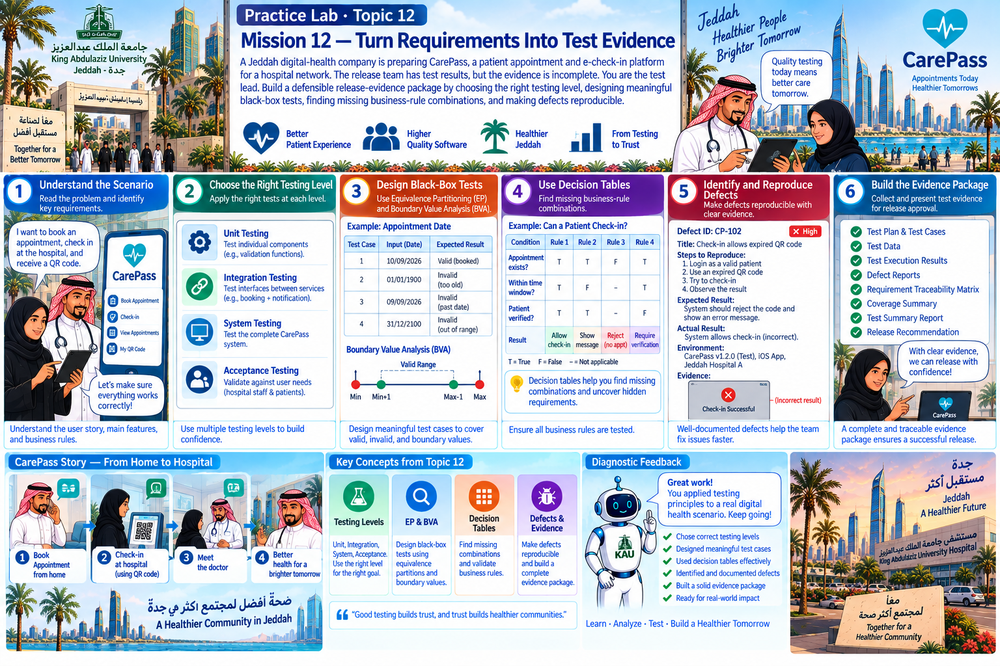

Practice Lab · Topic 12
A Jeddah digital-health company is preparing CarePass, a patient appointment and e-check-in platform for a hospital network. The release team has test results, but the evidence is incomplete. You are the test lead. Build a defensible release-evidence package by choosing the right testing level, designing meaningful black-box tests, finding missing business-rule combinations, and making defects reproducible.
